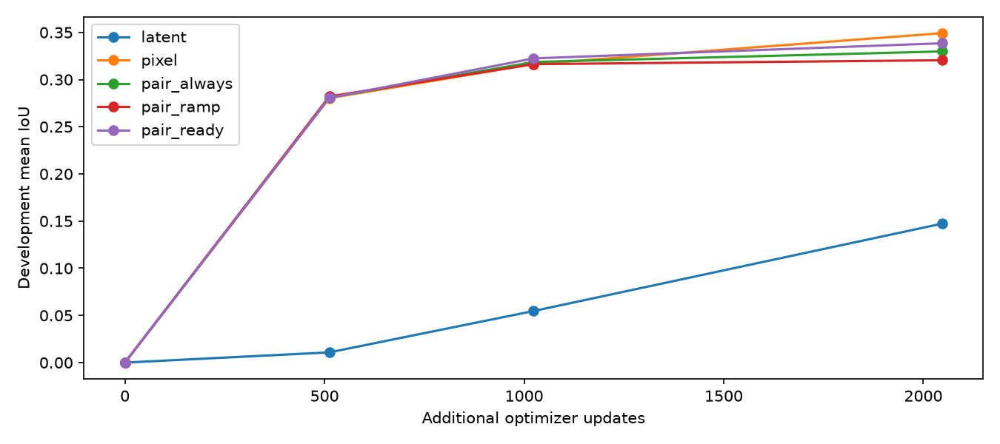
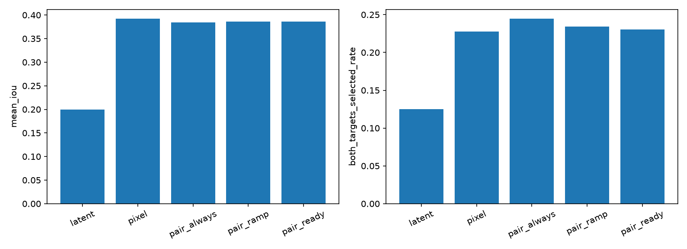
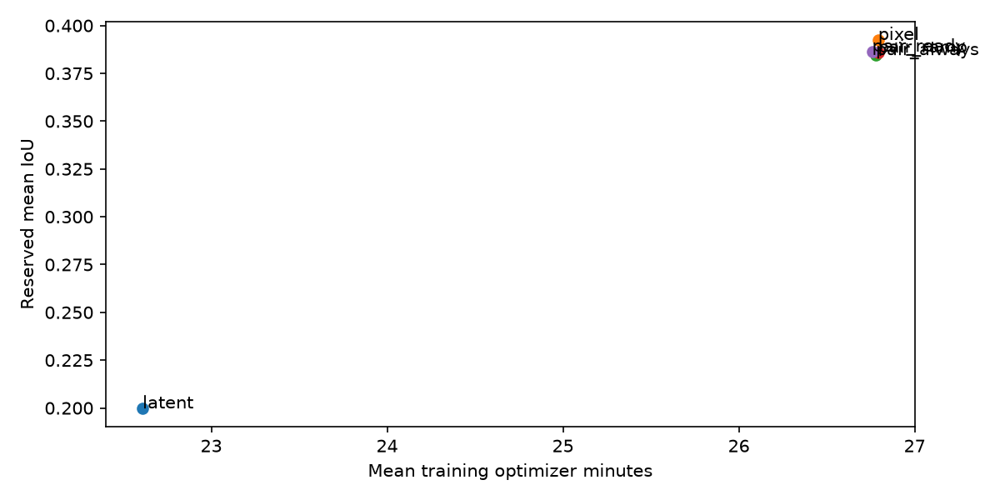
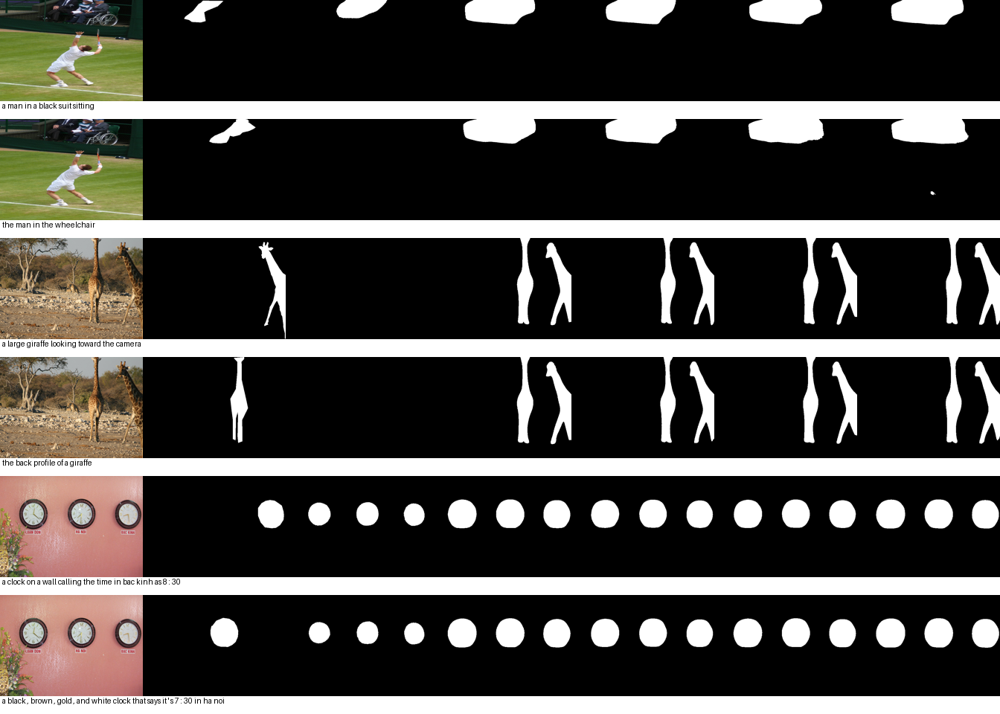

15 runs × 2048 updates, 2048 training images. All methods continue matching V11 step1000 checkpoints. Original images, text and labels preserved. Final checkpoints only.
本轮探索解码器拟合程度控制实例对比强度是否有效。实例对比、BCE/Dice及不确定性门控已有文献；组合不自动构成创新。所有正面与负面结果均保留。
| Split | Method | Mean IoU | Both targets selected | Empty rate |
|---|---|---|---|---|
| dev | latent | 0.1474 | 0.0781 | 0.5781 |
| dev | pixel | 0.3492 | 0.2396 | 0.0312 |
| dev | pair_always | 0.3298 | 0.1875 | 0.0312 |
| dev | pair_ramp | 0.3205 | 0.2188 | 0.0547 |
| dev | pair_ready | 0.3385 | 0.2292 | 0.0417 |
| reserved | latent | 0.1997 | 0.1250 | 0.5143 |
| reserved | pixel | 0.3925 | 0.2279 | 0.0332 |
| reserved | pair_always | 0.3845 | 0.2448 | 0.0391 |
| reserved | pair_ramp | 0.3858 | 0.2344 | 0.0469 |
| reserved | pair_ready | 0.3864 | 0.2305 | 0.0436 |
| refcoco | latent | 0.1238 | 0.0588 | 0.6910 |
| refcoco | pixel | 0.3182 | 0.1373 | 0.1026 |
| refcoco | pair_always | 0.2988 | 0.1401 | 0.1282 |
| refcoco | pair_ramp | 0.3004 | 0.1373 | 0.1417 |
| refcoco | pair_ready | 0.3159 | 0.1401 | 0.1228 |
| refcocoplus | latent | 0.1452 | 0.0771 | 0.6198 |
| refcocoplus | pixel | 0.3264 | 0.2204 | 0.0910 |
| refcocoplus | pair_always | 0.3224 | 0.2231 | 0.1031 |
| refcocoplus | pair_ramp | 0.3200 | 0.2149 | 0.1178 |
| refcocoplus | pair_ready | 0.3236 | 0.2121 | 0.1071 |
256个保留图像聚类，先对3个种子求平均；95%bootstrap区间和10项Holm校正。种子太少，不能将图像区间解释为完整训练随机性区间。外部数据集仍共享COCO图像来源，本轮采样图像相互隔离，不能声称跨视觉域泛化。
| Contrast | Metric | Difference | 95%CI | Holm p |
|---|---|---|---|---|
| pixel - latent | mean_iou | 0.1927 | 0.1740, 0.2121 | 0.0010 |
| pixel - latent | both_targets_selected_rate | 0.1029 | 0.0716, 0.1341 | 0.0010 |
| pair_always - pixel | mean_iou | -0.0079 | -0.0162, 0.0003 | 0.5655 |
| pair_always - pixel | both_targets_selected_rate | 0.0169 | -0.0078, 0.0430 | 1.0000 |
| pair_ramp - pair_always | mean_iou | 0.0013 | -0.0066, 0.0089 | 1.0000 |
| pair_ramp - pair_always | both_targets_selected_rate | -0.0104 | -0.0352, 0.0143 | 1.0000 |
| pair_ready - pair_always | mean_iou | 0.0019 | -0.0049, 0.0088 | 1.0000 |
| pair_ready - pair_always | both_targets_selected_rate | -0.0143 | -0.0365, 0.0065 | 1.0000 |
| pair_ready - pair_ramp | mean_iou | 0.0006 | -0.0050, 0.0063 | 1.0000 |
| pair_ready - pair_ramp | both_targets_selected_rate | -0.0039 | -0.0273, 0.0195 | 1.0000 |



列：输入、原始标签、latent、pixel、pair_always、pair_ramp、pair_ready；种子17，按图像ID取前三张，未按效果挑选。
